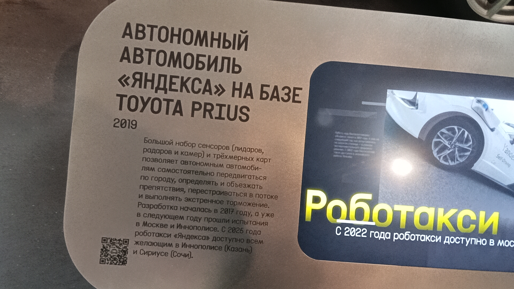

Яндекс Роботакси
Автономный автомобиль «Яндекса» на базе Toyota Prius — один из первых прототипов беспилотного такси в России, представленный в 2019 году.
Большой набор сенсоров (лидаров, радаров и камер) и трёхмерных карт позволяет автомобилю самостоятельно передвигаться по городу, определять и объезжать препятствия, перестраиваться в потоке и выполнять экстренное торможение.
Основные данные
| Модель | Toyota Prius (с оборудованием Яндекс) |
| Тип | Автономный автомобиль / Роботакси |
| Год выпуска | 2019 |
| Разработчик | Яндекс |
| Оборудование | Лидары, радары, камеры, трёхмерные карты |
| Текущее состояние | Не эксплуатируется (музейный экспонат) |
| Назначение | Музейный |
| Депо/Парк | Музей транспорта Москвы |
История
Начало разработки
Команда Яндекса приступила к созданию технологии автономного вождения. Главной задачей было научить автомобиль безопасно передвигаться в условиях плотного городского трафика.
Первые испытания
Прототипы на базе Toyota Prius вышли на дороги. Испытания прошли в Москве, а также в Иннополисе (Татарстан). Автомобили учились распознавать знаки, разметку и других участников движения.
Презентация экспоната
Представленная модель с характерной красно-белой раскраской и массивным сенсорным блоком на крыше (Vandex) стала символом российских беспилотных технологий. Этот экземпляр позже занял место в Музее Транспорта Москвы.
Запуск Роботакси
С 2022 года сервис беспилотного такси «Яндекса» стал доступен всем желающим в Иннополисе (Казань). Позже география была расширена на федеральную территорию Сириус (Сочи).
Интересные факты
Как это работает: Автомобиль не просто «видит» дорогу, он строит трёхмерную карту пространства в реальном времени. Лидары (лазерные сканеры) создают облако точек, радары измеряют скорость объектов, а камеры считывают цвета светофоров и дорожные знаки. Всё это обрабатывается бортовым компьютером.
Соседство в музее: В экспозиции Музея Транспорта Москвы этот автомобиль стоит неподалёку от беспилотного минибуса «Матрёшка» (2016). Это наглядно показывает эволюцию подходов к беспилотному транспорту: от футуристичных концептов до реальных серийных машин, адаптированных для дорог общего пользования.
Фотогалерея

На базе Toyota Prius в музее.

Информационная табличка об экспонате «Роботакси».
Нажмите на фото для увеличения